规定初始像素覆盖已通过独立数据验收，完整12步与物理安全未通过。Prescribed initial pixel coverage passes the independent DATA audit; full12-step and physical acceptance remain incomplete. Original1280×720; no edits/crop. Every image below is INITIAL, not micro1/final.
{"seed": 1, "proposal_id": 2083, "global_id": 16419, "family": 3}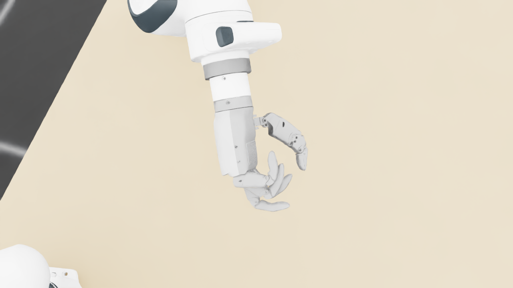
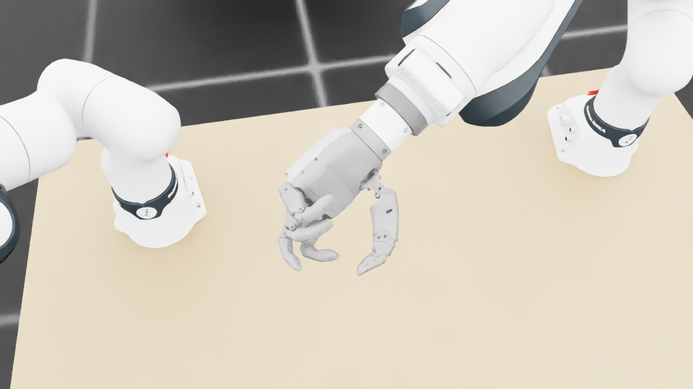
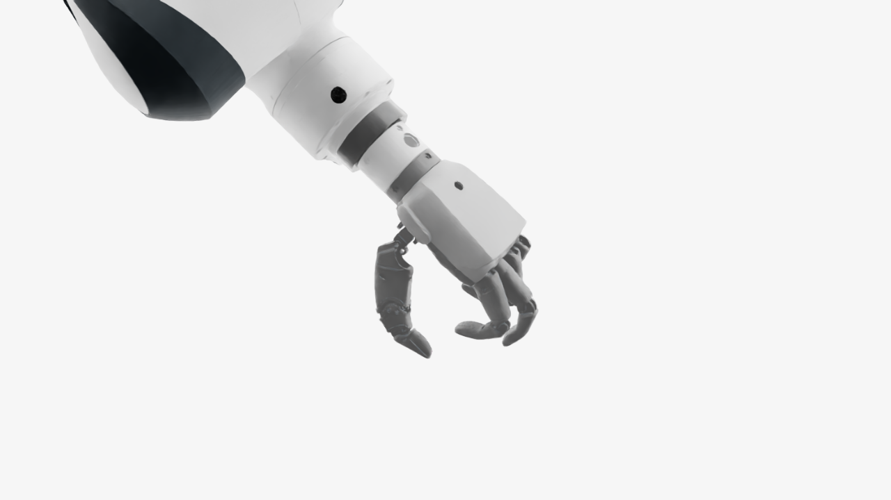
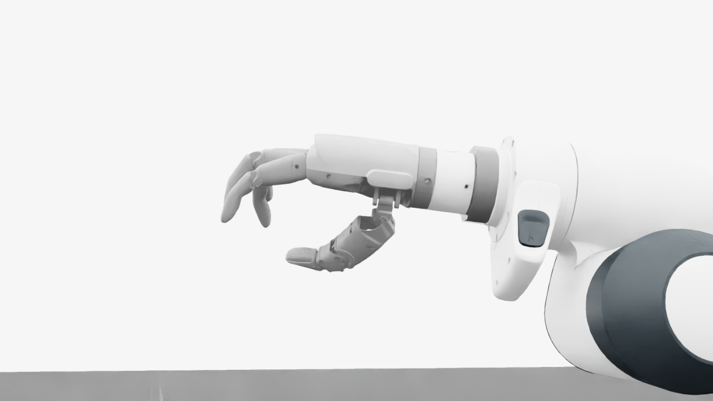
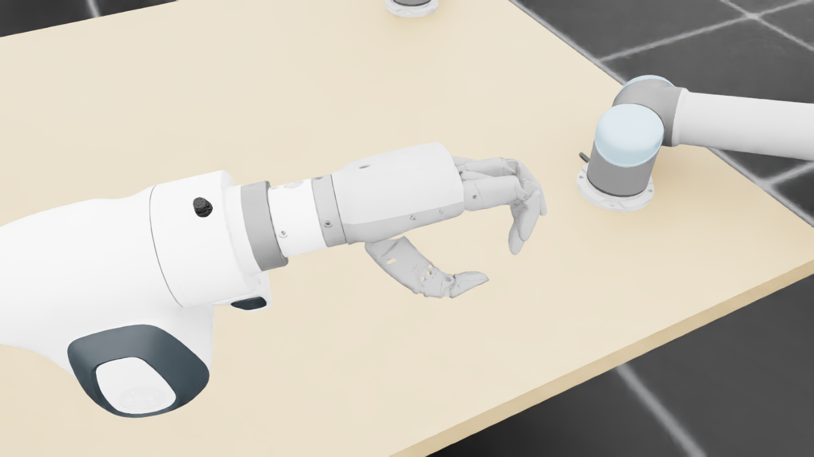
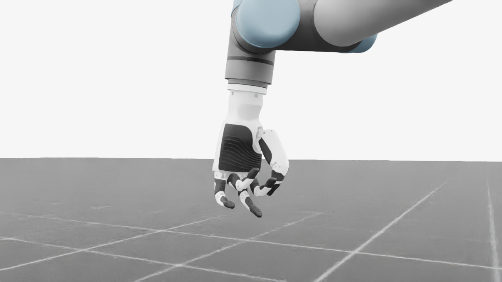
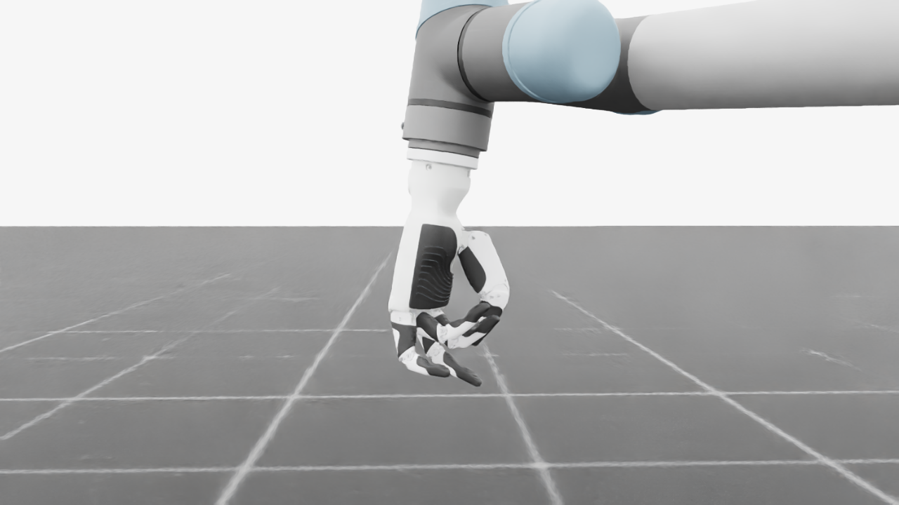
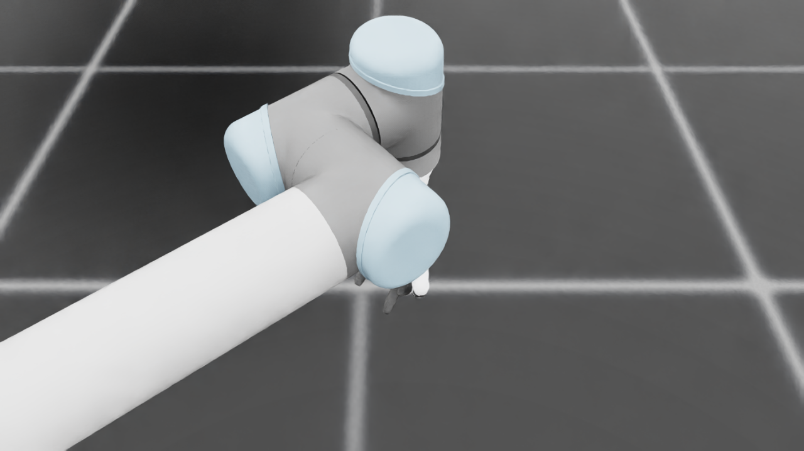
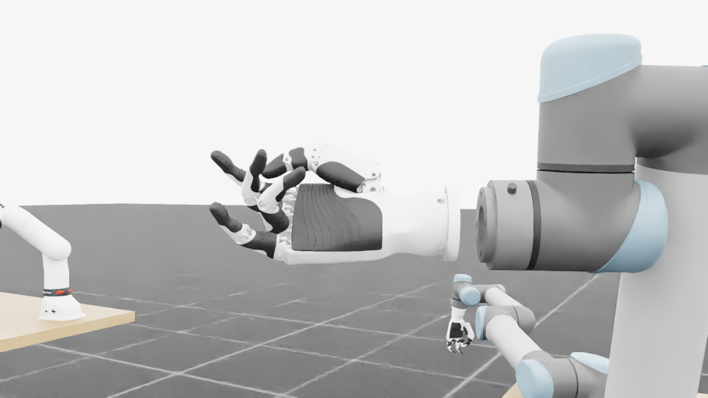
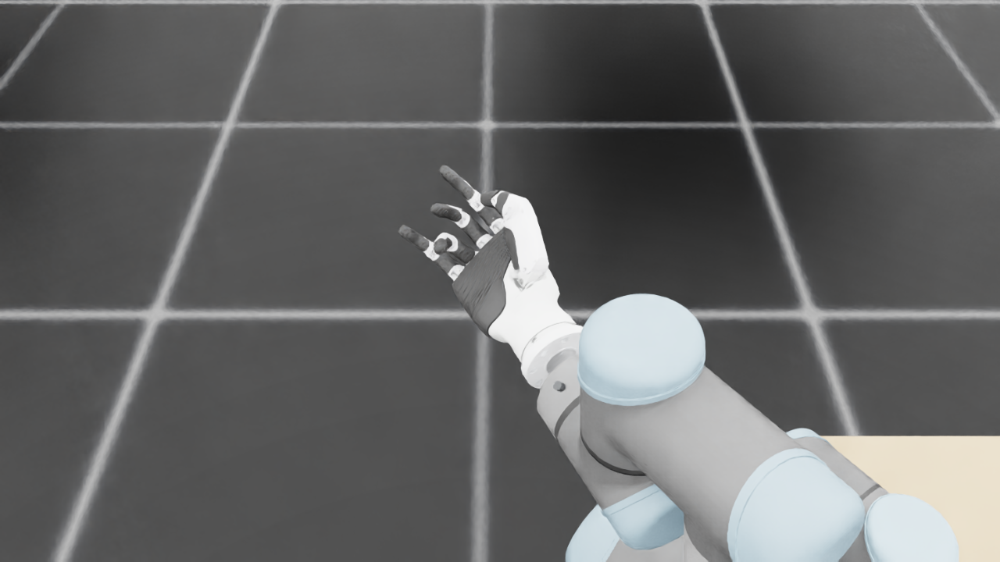
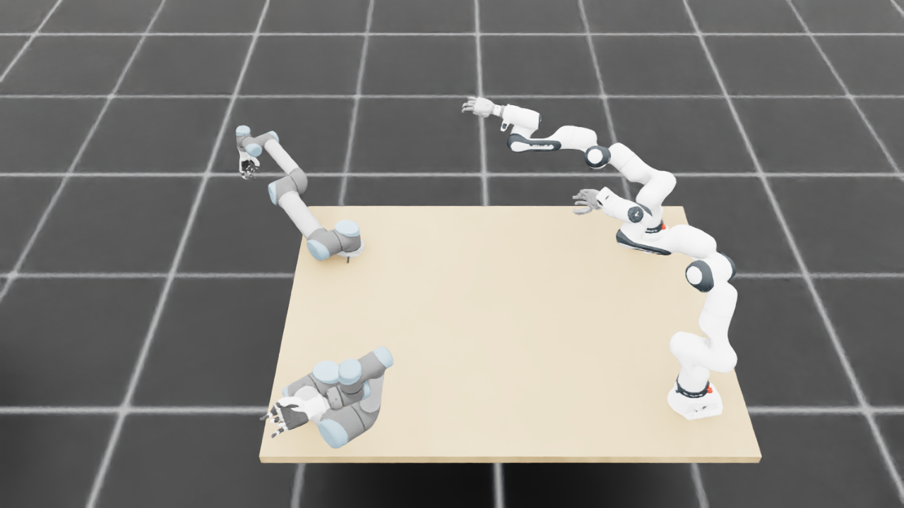
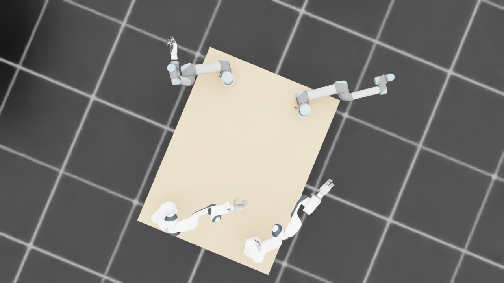
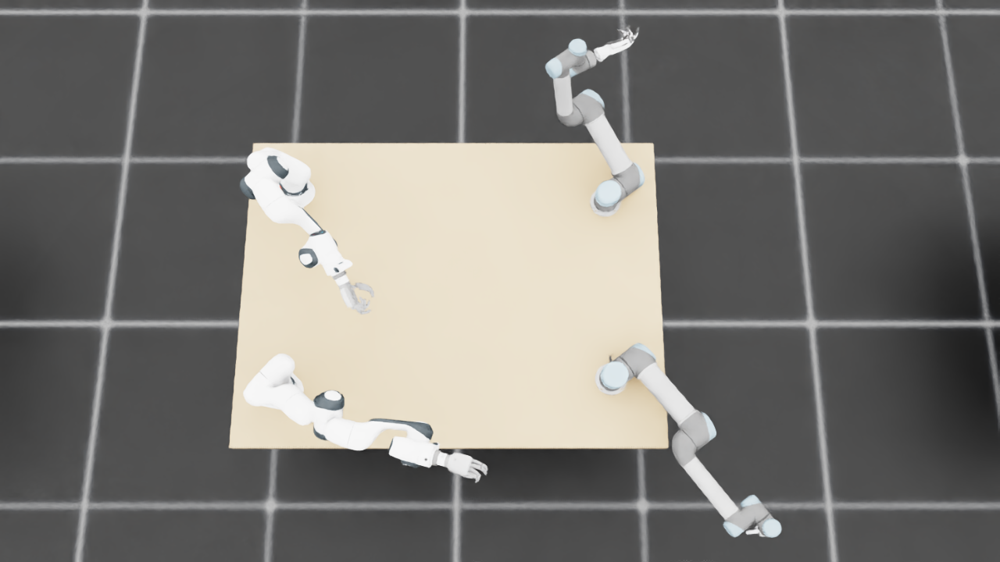
{
"qualified": true,
"arms": {
"F_L": {
"qualified": true,
"palm_visual_peak_pixels": 22656,
"finger_family_peak_pixels": {
"thumb": 8050,
"index": 4281,
"middle": 3556,
"ring": 2736,
"little": 4740
},
"per_native_body_peak_pixels": {
"/World/envs/env_14/F_L/f2_hand/left_hand_base": 27980,
"/World/envs/env_14/F_L/f2_hand/left_index_1": 2665,
"/World/envs/env_14/F_L/f2_hand/left_middle_1": 2040,
"/World/envs/env_14/F_L/f2_hand/left_pinky_1": 2937,
"/World/envs/env_14/F_L/f2_hand/left_ring_1": 882,
"/World/envs/env_14/F_L/f2_hand/left_thumb_1": 660,
"/World/envs/env_14/F_L/f2_hand/left_index_2": 1616,
"/World/envs/env_14/F_L/f2_hand/left_middle_2": 1959,
"/World/envs/env_14/F_L/f2_hand/left_pinky_2": 1944,
"/World/envs/env_14/F_L/f2_hand/left_ring_2": 2011,
"/World/envs/env_14/F_L/f2_hand/left_thumb_2": 4464,
"/World/envs/env_14/F_L/f2_hand/left_thumb_3": 1551,
"/World/envs/env_14/F_L/f2_hand/left_thumb_4": 1375
},
"native_body_visibility_gaps": [],
"all_native_hand_bodies_observed": true,
"full_mesh_coverage_certified": false,
"all_recorded_attempt_peak": {
"qualified": false,
"palm_visual_peak_pixels": 22656,
"finger_family_peak_pixels": {
"thumb": 9703,
"index": 4281,
"middle": 3556,
"ring": 3134,
"little": 4740
},
"per_native_body_peak_pixels": {
"/World/envs/env_14/F_L/f2_hand/left_hand_base": 29689,
"/World/envs/env_14/F_L/f2_hand/left_index_1": 2665,
"/World/envs/env_14/F_L/f2_hand/left_middle_1": 2040,
"/World/envs/env_14/F_L/f2_hand/left_pinky_1": 2937,
"/World/envs/env_14/F_L/f2_hand/left_ring_1": 882,
"/World/envs/env_14/F_L/f2_hand/left_thumb_1": 660,
"/World/envs/env_14/F_L/f2_hand/left_index_2": 1616,
"/World/envs/env_14/F_L/f2_hand/left_middle_2": 1959,
"/World/envs/env_14/F_L/f2_hand/left_pinky_2": 2331,
"/World/envs/env_14/F_L/f2_hand/left_ring_2": 2374,
"/World/envs/env_14/F_L/f2_hand/left_thumb_2": 4796,
"/World/envs/env_14/F_L/f2_hand/left_thumb_3": 2262,
"/World/envs/env_14/F_L/f2_hand/left_thumb_4": 2217
},
"native_body_visibility_gaps": [],
"all_native_hand_bodies_observed": true,
"full_mesh_coverage_certified": false,
"qualification": false
},
"attempts": 4,
"decoded": 4
},
"F_R": {
"qualified": true,
"palm_visual_peak_pixels": 28110,
"finger_family_peak_pixels": {
"thumb": 11762,
"index": 6828,
"middle": 3161,
"ring": 3626,
"little": 6585
},
"per_native_body_peak_pixels": {
"/World/envs/env_14/F_R/f2_hand/right_hand_base": 36258,
"/World/envs/env_14/F_R/f2_hand/right_index_1": 4195,
"/World/envs/env_14/F_R/f2_hand/right_middle_1": 1784,
"/World/envs/env_14/F_R/f2_hand/right_pinky_1": 4248,
"/World/envs/env_14/F_R/f2_hand/right_ring_1": 2097,
"/World/envs/env_14/F_R/f2_hand/right_thumb_1": 1349,
"/World/envs/env_14/F_R/f2_hand/right_index_2": 2633,
"/World/envs/env_14/F_R/f2_hand/right_middle_2": 1714,
"/World/envs/env_14/F_R/f2_hand/right_pinky_2": 2337,
"/World/envs/env_14/F_R/f2_hand/right_ring_2": 1785,
"/World/envs/env_14/F_R/f2_hand/right_thumb_2": 6400,
"/World/envs/env_14/F_R/f2_hand/right_thumb_3": 2181,
"/World/envs/env_14/F_R/f2_hand/right_thumb_4": 2041
},
"native_body_visibility_gaps": [],
"all_native_hand_bodies_observed": true,
"full_mesh_coverage_certified": false,
"all_recorded_attempt_peak": {
"qualified": false,
"palm_visual_peak_pixels": 32451,
"finger_family_peak_pixels": {
"thumb": 11764,
"index": 6828,
"middle": 4328,
"ring": 4346,
"little": 6585
},
"per_native_body_peak_pixels": {
"/World/envs/env_14/F_R/f2_hand/right_hand_base": 39972,
"/World/envs/env_14/F_R/f2_hand/right_index_1": 4195,
"/World/envs/env_14/F_R/f2_hand/right_middle_1": 2685,
"/World/envs/env_14/F_R/f2_hand/right_pinky_1": 4248,
"/World/envs/env_14/F_R/f2_hand/right_ring_1": 2097,
"/World/envs/env_14/F_R/f2_hand/right_thumb_1": 1349,
"/World/envs/env_14/F_R/f2_hand/right_index_2": 2699,
"/World/envs/env_14/F_R/f2_hand/right_middle_2": 1714,
"/World/envs/env_14/F_R/f2_hand/right_pinky_2": 2378,
"/World/envs/env_14/F_R/f2_hand/right_ring_2": 2306,
"/World/envs/env_14/F_R/f2_hand/right_thumb_2": 6400,
"/World/envs/env_14/F_R/f2_hand/right_thumb_3": 2640,
"/World/envs/env_14/F_R/f2_hand/right_thumb_4": 2419
},
"native_body_visibility_gaps": [],
"all_native_hand_bodies_observed": true,
"full_mesh_coverage_certified": false,
"qualification": false
},
"attempts": 6,
"decoded": 6
},
"U_L": {
"qualified": true,
"palm_visual_peak_pixels": 10396,
"finger_family_peak_pixels": {
"thumb": 6990,
"index": 2038,
"middle": 2010,
"ring": 2784,
"little": 3241
},
"per_native_body_peak_pixels": {
"/World/envs/env_14/U_L/wrist_3_link": 30086,
"/World/envs/env_14/U_L/left_index_1": 807,
"/World/envs/env_14/U_L/left_little_1": 2017,
"/World/envs/env_14/U_L/left_middle_1": 591,
"/World/envs/env_14/U_L/left_ring_1": 1300,
"/World/envs/env_14/U_L/left_thumb_1": 255,
"/World/envs/env_14/U_L/left_index_2": 1231,
"/World/envs/env_14/U_L/left_little_2": 1224,
"/World/envs/env_14/U_L/left_middle_2": 1419,
"/World/envs/env_14/U_L/left_ring_2": 1484,
"/World/envs/env_14/U_L/left_thumb_2": 4543,
"/World/envs/env_14/U_L/left_thumb_3": 1721,
"/World/envs/env_14/U_L/left_thumb_4": 477
},
"native_body_visibility_gaps": [],
"all_native_hand_bodies_observed": true,
"full_mesh_coverage_certified": false,
"all_recorded_attempt_peak": {
"qualified": false,
"palm_visual_peak_pixels": 10995,
"finger_family_peak_pixels": {
"thumb": 7401,
"index": 2420,
"middle": 2282,
"ring": 2784,
"little": 3241
},
"per_native_body_peak_pixels": {
"/World/envs/env_14/U_L/wrist_3_link": 34750,
"/World/envs/env_14/U_L/left_index_1": 1958,
"/World/envs/env_14/U_L/left_little_1": 2017,
"/World/envs/env_14/U_L/left_middle_1": 1412,
"/World/envs/env_14/U_L/left_ring_1": 1300,
"/World/envs/env_14/U_L/left_thumb_1": 255,
"/World/envs/env_14/U_L/left_index_2": 1231,
"/World/envs/env_14/U_L/left_little_2": 1224,
"/World/envs/env_14/U_L/left_middle_2": 1419,
"/World/envs/env_14/U_L/left_ring_2": 1484,
"/World/envs/env_14/U_L/left_thumb_2": 4543,
"/World/envs/env_14/U_L/left_thumb_3": 1951,
"/World/envs/env_14/U_L/left_thumb_4": 832
},
"native_body_visibility_gaps": [],
"all_native_hand_bodies_observed": true,
"full_mesh_coverage_certified": false,
"qualification": false
},
"attempts": 7,
"decoded": 7
},
"U_R": {
"qualified": true,
"palm_visual_peak_pixels": 17092,
"finger_family_peak_pixels": {
"thumb": 11424,
"index": 3393,
"middle": 3296,
"ring": 5002,
"little": 5485
},
"per_native_body_peak_pixels": {
"/World/envs/env_14/U_R/wrist_3_link": 67485,
"/World/envs/env_14/U_R/right_index_1": 2311,
"/World/envs/env_14/U_R/right_little_1": 3250,
"/World/envs/env_14/U_R/right_middle_1": 2150,
"/World/envs/env_14/U_R/right_ring_1": 2335,
"/World/envs/env_14/U_R/right_thumb_1": 681,
"/World/envs/env_14/U_R/right_index_2": 1843,
"/World/envs/env_14/U_R/right_little_2": 2235,
"/World/envs/env_14/U_R/right_middle_2": 2420,
"/World/envs/env_14/U_R/right_ring_2": 2667,
"/World/envs/env_14/U_R/right_thumb_2": 6805,
"/World/envs/env_14/U_R/right_thumb_3": 2550,
"/World/envs/env_14/U_R/right_thumb_4": 1388
},
"native_body_visibility_gaps": [],
"all_native_hand_bodies_observed": true,
"full_mesh_coverage_certified": false,
"all_recorded_attempt_peak": {
"qualified": false,
"palm_visual_peak_pixels": 17723,
"finger_family_peak_pixels": {
"thumb": 12120,
"index": 5059,
"middle": 3296,
"ring": 5002,
"little": 5485
},
"per_native_body_peak_pixels": {
"/World/envs/env_14/U_R/wrist_3_link": 67485,
"/World/envs/env_14/U_R/right_index_1": 3236,
"/World/envs/env_14/U_R/right_little_1": 3250,
"/World/envs/env_14/U_R/right_middle_1": 2150,
"/World/envs/env_14/U_R/right_ring_1": 2335,
"/World/envs/env_14/U_R/right_thumb_1": 681,
"/World/envs/env_14/U_R/right_index_2": 1969,
"/World/envs/env_14/U_R/right_little_2": 2235,
"/World/envs/env_14/U_R/right_middle_2": 2420,
"/World/envs/env_14/U_R/right_ring_2": 2667,
"/World/envs/env_14/U_R/right_thumb_2": 7182,
"/World/envs/env_14/U_R/right_thumb_3": 3452,
"/World/envs/env_14/U_R/right_thumb_4": 1463
},
"native_body_visibility_gaps": [],
"all_native_hand_bodies_observed": true,
"full_mesh_coverage_certified": false,
"qualification": false
},
"attempts": 7,
"decoded": 7
}
},
"wide": {
"qualified": true,
"per_native_object_peak_pixels": {
"/World/envs/env_14/F_L/fr3_link0": 2957,
"/World/envs/env_14/F_L/fr3_link1": 3264,
"/World/envs/env_14/F_L/fr3_link2": 3355,
"/World/envs/env_14/F_L/fr3_link3": 3800,
"/World/envs/env_14/F_L/fr3_link4": 2483,
"/World/envs/env_14/F_L/fr3_link5": 2870,
"/World/envs/env_14/F_L/fr3_link6": 1785,
"/World/envs/env_14/F_L/fr3_link7": 617,
"/World/envs/env_14/F_L/fr3_link8": 105,
"/World/envs/env_14/F_L/f2_hand/left_hand_base": 657,
"/World/envs/env_14/F_L/f2_hand/left_index_1": 45,
"/World/envs/env_14/F_L/f2_hand/left_middle_1": 37,
"/World/envs/env_14/F_L/f2_hand/left_pinky_1": 75,
"/World/envs/env_14/F_L/f2_hand/left_ring_1": 32,
"/World/envs/env_14/F_L/f2_hand/left_thumb_1": 22,
"/World/envs/env_14/F_L/f2_hand/left_index_2": 35,
"/World/envs/env_14/F_L/f2_hand/left_middle_2": 54,
"/World/envs/env_14/F_L/f2_hand/left_pinky_2": 45,
"/World/envs/env_14/F_L/f2_hand/left_ring_2": 48,
"/World/envs/env_14/F_L/f2_hand/left_thumb_2": 156,
"/World/envs/env_14/F_L/f2_hand/left_thumb_3": 42,
"/World/envs/env_14/F_L/f2_hand/left_thumb_4": 36,
"/World/envs/env_14/F_R/fr3_link0": 664,
"/World/envs/env_14/F_R/fr3_link1": 1612,
"/World/envs/env_14/F_R/fr3_link2": 1951,
"/World/envs/env_14/F_R/fr3_link3": 2526,
"/World/envs/env_14/F_R/fr3_link4": 1395,
"/World/envs/env_14/F_R/fr3_link5": 2482,
"/World/envs/env_14/F_R/fr3_link6": 1181,
"/World/envs/env_14/F_R/fr3_link7": 602,
"/World/envs/env_14/F_R/fr3_link8": 131,
"/World/envs/env_14/F_R/f2_hand/right_hand_base": 954,
"/World/envs/env_14/F_R/f2_hand/right_index_1": 69,
"/World/envs/env_14/F_R/f2_hand/right_middle_1": 78,
"/World/envs/env_14/F_R/f2_hand/right_pinky_1": 80,
"/World/envs/env_14/F_R/f2_hand/right_ring_1": 71,
"/World/envs/env_14/F_R/f2_hand/right_thumb_1": 1,
"/World/envs/env_14/F_R/f2_hand/right_index_2": 37,
"/World/envs/env_14/F_R/f2_hand/right_middle_2": 51,
"/World/envs/env_14/F_R/f2_hand/right_pinky_2": 29,
"/World/envs/env_14/F_R/f2_hand/right_ring_2": 17,
"/World/envs/env_14/F_R/f2_hand/right_thumb_2": 30,
"/World/envs/env_14/F_R/f2_hand/right_thumb_3": 14,
"/World/envs/env_14/F_R/f2_hand/right_thumb_4": 20,
"/World/envs/env_14/U_L/base_link": 355,
"/World/envs/env_14/U_L/shoulder_link": 1332,
"/World/envs/env_14/U_L/upper_arm_link": 4984,
"/World/envs/env_14/U_L/forearm_link": 3798,
"/World/envs/env_14/U_L/wrist_1_link": 785,
"/World/envs/env_14/U_L/wrist_2_link": 615,
"/World/envs/env_14/U_L/wrist_3_link": 425,
"/World/envs/env_14/U_L/left_index_1": 28,
"/World/envs/env_14/U_L/left_little_1": 36,
"/World/envs/env_14/U_L/left_middle_1": 13,
"/World/envs/env_14/U_L/left_ring_1": 29,
"/World/envs/env_14/U_L/left_thumb_1": 9,
"/World/envs/env_14/U_L/left_index_2": 18,
"/World/envs/env_14/U_L/left_little_2": 28,
"/World/envs/env_14/U_L/left_middle_2": 29,
"/World/envs/env_14/U_L/left_ring_2": 26,
"/World/envs/env_14/U_L/left_thumb_2": 91,
"/World/envs/env_14/U_L/left_thumb_3": 33,
"/World/envs/env_14/U_L/left_thumb_4": 3,
"/World/envs/env_14/U_R/base_link": 322,
"/World/envs/env_14/U_R/shoulder_link": 1413,
"/World/envs/env_14/U_R/upper_arm_link": 4356,
"/World/envs/env_14/U_R/forearm_link": 3117,
"/World/envs/env_14/U_R/wrist_1_link": 1647,
"/World/envs/env_14/U_R/wrist_2_link": 806,
"/World/envs/env_14/U_R/wrist_3_link": 2258,
"/World/envs/env_14/U_R/right_index_1": 73,
"/World/envs/env_14/U_R/right_little_1": 84,
"/World/envs/env_14/U_R/right_middle_1": 47,
"/World/envs/env_14/U_R/right_ring_1": 38,
"/World/envs/env_14/U_R/right_thumb_1": 19,
"/World/envs/env_14/U_R/right_index_2": 76,
"/World/envs/env_14/U_R/right_little_2": 53,
"/World/envs/env_14/U_R/right_middle_2": 64,
"/World/envs/env_14/U_R/right_ring_2": 92,
"/World/envs/env_14/U_R/right_thumb_2": 339,
"/World/envs/env_14/U_R/right_thumb_3": 143,
"/World/envs/env_14/U_R/right_thumb_4": 66,
"/World/envs/env_14/TableF": 96502,
"/World/envs/env_14/TableU": 97483
},
"arm_peak_pixels": {
"F_L": 22023,
"F_R": 13225,
"U_L": 11983,
"U_R": 14682
},
"table_peak_pixels": {
"TableF": 96502,
"TableU": 97483
},
"critical_body_peak_pixels": {
"/World/envs/env_14/U_L/forearm_link": 3798,
"/World/envs/env_14/U_L/wrist_2_link": 615,
"/World/envs/env_14/U_R/forearm_link": 3117,
"/World/envs/env_14/U_R/wrist_2_link": 806
}
},
"raw_attempt_count": 36,
"PNG_count": 36,
"angle_records": 36,
"max_actual_angle_identity_error_deg": 0.0,
"held_snapshot_checks": 2470,
"universal_visibility_impossible": false,
"full_mesh_coverage_certified": false
}